Архив новостей 2021 года
среда, 26 мая 2021 год
Сегодня к предстоящему Дню библиотек для Суходоевой Тани была проведена викторина на дому «Книга и библиотека навсегда».

В это же утро прошло занятие кружка «Библионик» к Всероссийскому дню библиотек: час информации «Библиотека для детей» для ребят и воспитательницы Перескоковой Александры Николаевны.

После стихов к празднику и слайд-фильма «Детские библиотеки» для детей была игра «Что бывает в библиотеке». Надо было отвечать «Да» или «Нет» на вопросы.
На выставке-просмотре «Фейерверк детских книг» было много интересных книг. Жаль, что мамочки не берут книги своим детям. Артёму понравилась книга Сутеева «Кто сказал мяу»; Рите — «Спящая красавица» Перро; Свете — «Пять сказок», «Змей Горыныч и Василиса» и «Красавица и чудовище»; Андранику — «Сказочная азбука» Роя. С книгами, которые понравились девчонкам и мальчишкам, прошла небольшая фотосессия рядом с Книжным королём.

30 мая вся Россия будет отмечать 800 лет со дня рождения Александра Невского. А кто это такой? Мы также посмотрели мультфильм «История Александра Невского для малышей».
Затем все ребята участвовали в конкурсе «Самый, самый». Самым метким оказался Артём Бяков, он закинул больше всех луковиц в тазик. Самая внимательная — Света Суходоева, только она не запуталась и правильно поднимала руки по командам «скворец» и «трясогузка». Самые ловкие могли дольше всех не позволить воздушному шарику не упасть на пол, это были Максим Кондаков, Андраник Маргарян, Света Суходоева. Самый высокий — Андраник Маргарян. Самая короткая фамилия у Артёма Бякова. Самая длинная коса у Светланы Суходоевой.
В электронной викторине «Загадки про героев русских сказок и мультфильмов» после дополнительных вопросов выиграл Андраник Маргарян.
В конце занятия фото на память. Всем хорошего настроения!


вторник, 25 мая 2021 год
Сегодня для малышей и воспитательницы Новицкой Любови Викторовны на занятии кружка «Библионик» библиотекарь провела час весёлых затей «В стране книг» накануне Дня библиотек.
Поздоровавшись с Книжным королём, дети начали играть в «Ромашку», выполняя разные задания. Лепесток приклеивался к жёлтой сердцевинке, но сначала надо было присесть 10 раз, попрыгать на одной ножке, помяукать, прокукарекать и замычать.


Малыши прыгали, как белки, и собирали шишки, хлопали в ладоши, запускали бумажный самолёт, искали на выставке книги с изображением собачки на переплёте. Мультик «Буба. Библиотека» не дал ребятам убежать резвиться на улицу, а Крош очень заманчиво читал в мультике «Я люблю читать». Так же малыши танцевали вместе с ребятами из клипа «Ай, будет круто».

А ещё мы пытались запустить вверх бумажного журавлика.
среда, 19 мая 2021 год
Сегодня в Краснопольской библиотеке дети на занятии кружка «Библионик» совершили виртуальное путешествие по музеям города Кирова, музею петуха и кошек.

Ребята познакомились с книжной выставкой «18 мая — Международный день музеев» и подержали в руках её экспонаты: прялку и муляж черепа человека.


Также дети узнали, что 20 мая исполнится 110 лет со дня рождения голландской сказочницы Анни Шмидт. Она написала много забавных книг. К примеру, в книге «Мурли» кошка что-то съела и превратилась в девушку.

Когда ребята устали сидеть, мы начали играть и фотографироваться.

пятница, 14 мая 2021 год
Сегодня в 10 часов утра на улице около Краснопольского Дома культуры и библиотеки началась ярмарка. Что можно было купить? На посадку чеснок и красный лук; саженцы земклуники, крыжовника, вишни, мелиссы и мяты перечной; рассаду хризантемы, астры, лиатриса, томата; комнатные цветы: колеус и хлорофитум; клубни белой лилии.

На ярмарке побывало 16 человек. Они приобрели много нужного для своего сада и огорода. Выручка от ярмарки составила 340 рублей. Деньги пойдут на проведение мероприятий для детей в Доме культуры и библиотеке.

Затем подошли дети из детского сада «Родничок» и показали нам концерт к Международному дню семьи, который вели озорная Девочка (Хлебникова Оксана Витальевна) и Домовой (Фалалеева Елена Евгеньевна). Малыши показали танец с лентами, а дети из старшей группы исполнили песню «Хорошо у нас в саду», танцы «Губки бантиком», «Никому про наш секрет не говори».


В конце праздника был общий танец для детей под названием «Барбарики». Домовому очень понравилось выступление очаровательных и нарядных детей, и он подарил им конфеты и шоколад. Спонсором стали те жители деревни, кто положил денежки в Коробку добра во время акции «Добрая Вятка». Спасибо большое им за это!
Затем зрители отвечали на викторины о родственных связях и про еду народов мира. Звучали стихи в исполнении Хлебниковой Оксаны Витальевны. Праздник прошел весело.

Что было до него? Накануне библиотекарь с заведующей Дома культуры Суходоевой Анастасией Николаевной нарисовали плакаты, а утром их повесили с помощью Суходоева Степана. Ветер хотел помешать, но мы справились. Распечатанный плакат к празднику и шарики предоставила Хлебникова Оксана Витальевна.
Спасибо большое организаторам, участникам и зрителям!
среда, 12 мая 2021 год
Сегодня на занятии кружка «Библионик» для ребят с воспитательницей Перескоковой Александрой Николаевной прошёл час памяти «Победой кончились война».

Ребята посмотрели все книги и рисунки с выставки «Минувших лет святая память», а также послушали пересказ рассказа Сергея Алексеева «Два танка».
После просмотра и обсуждения мультфильма «Партизанская Снегурочка» все отвечали на электронную викторину «Мы помним, мы гордимся».
Устали во время игры «В бой пошла пехота» и отдохнули, когда библиотекарь показала Мастер-класс «Танк оригами из бумаги». В итоге смастерили шесть бумажных танков.


По дороге в детсад дети запускали бумажный самолётик, сделанный заранее по видео из Ютуба. Он может улететь на 100 метров, но в этот раз дальше 15 метров не смог. Может, ветер небольшой помешал.

вторник, 11 мая 2021 год
Сегодня в Краснопольской библиотеке прошло занятие кружка «Библионик» для пятерых детей и воспитательницы Новицкой Любови Викторовны. Это был час памяти «Нам жить и помнить» к Дню Победы.

После рассказа о празднике 9 Мая дети познакомились с выставкой «Минувших лет святая память». Там стояли книги с иллюстрациями сражений Великой Отечественной войны, рисунки подростков из архива библиотеки (Бяковой Ирины и Фалалеева Михаила), поделки из бумаги двух танков (советского и немецкого), военного самолёта, игрушечного танка.

Никите Пустохину понравился танк. Он прокатил его по библиотеке так, что отпала одна гусеница. Зато самолёт оказался крепче: после полётов и падений он остался целым.
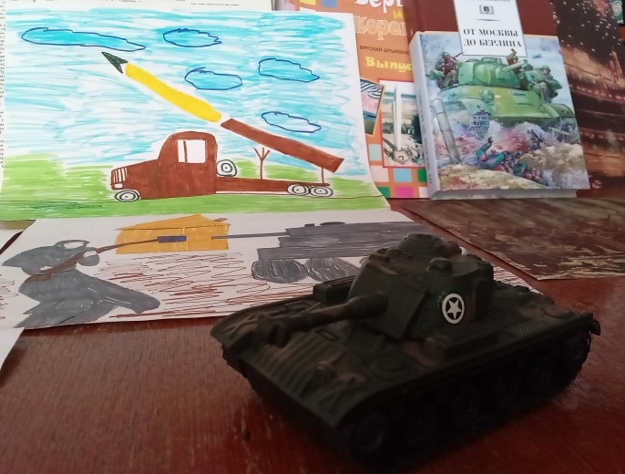Потом все участвовали в игре «В бой пошла пехота». Ребята то были в роли лётчиков-пилотов, то шли маршем по дорогам войны, то прятались в окопах.

Затем настало время мультфильма «Партизанская Снегурочка» (1981 года) про девочку, доставившую донесение из деревни в партизанский отряд. По пути она встретила зайца, а ещё девочке пришлось спрятаться под мост, когда она увидела приближающиеся машины фашистов. Но весточка была доставлена в отряд. Глухой ночью вернулась внучка к деду и уснула прямо на полу.

среда, 28 апреля 2021 год
Сегодня на занятие кружка «Библионик» пришло шестеро детей с воспитательницей Толмачёвой Татьяной Александровной.
Сначала ребята узнали, что в пятницу 30 апреля отметит юбилей шведский писатель и художник Свен Нурдквист. Ему исполнится 75 лет. Его знаменитые книги про Петсона и кота Финдуса любимы во многих странах мира, а публикуются они с 1984 года.
Мы посмотрели презентацию «Приключения Финдуса и Петсона», а затем познакомились с очень смешной книгой «Именинный пирог». Финдус отмечает день рождения трижды в год, и Петсон всегда печёт пирог. Но в этот раз всё пошло не по плану: кот убегал от быка с занавеской на хвосте, а Петсон упал на корзину с яйцами, недавно принесёнными из курятника. Но пирог в конце концов всё-таки был испечён. И под музыку венских вальсов Петсон с Финдусом наслаждались пирогом с чаем.
Мы с ребятами стали рисовать «именинный пирог» на бумажном листе гуашью. Дети показали свою фантазию.
Потом была презентация «Памятники сказочным героям» к Международному дню памятников. Ребята узнали многие памятники, например почтальону Печкину, бременским музыкантам, крокодилу Гене, Чебурашке, Коту Василию. Ребятам понравился памятник «Робот» из Японии.
Также специально к этому дню библиотекарь сделала электронную презентацию «Сказка о доброй принцессе Неринге (по мотивам сказок Пруссии, мира между Вислой и Неманом) Ольги Таир. Вождь Карвейт попросил у колдуна ребёночка. Предсказание сбылось: через год у вождя родилась дочка Неринга, которая ещё через год выросла выше самого отца. Много доброго сделала девушка за свою жизнь. И когда пришла пора ей выйти замуж, во всей стране не нашлось жениха. Но встретился Неринге добрый и сильный молодец, и согласилась она выйти за него. Внезапно налетела буря, которая принесла много разрухи. Даже замок оказался под водой. Но Неринга навела порядок. И после свадьбы она стала жить в замке мужа, у них родился сыночек. Жили они долго и счастливо, люди любили Нерингу.
Очень добрая сказка. Понравилась многим детям. Мы посмотрим эту презентацию на летних каникулах с детьми постарше.
понедельник, 26 апреля 2021 год
23 апреля в Краснополье собрались команды ветеранов и школьниц для участия в квесте «Космическое путешествие».
Девчонок и самых смелых бабушек нашей деревни ждали задания на девяти станциях. Маршрутные листы находились у командиров «экипажей», а станции были в библиотеке и Доме культуры. После каждой станции команда получала кусочек звезды. В конце квеста участники должны были сложить целую звезду.
Победители нашли на выставке за одной из книг о космосе конфеты «Марс», другой команде достался сухой паёк (шоколад «Алёнка»).
Затем мы участвовали в весёлом экспромте «Послание к мирам». Космический танец зарядил всех энергией. Было познавательно и весело. К примеру, на вечере мы узнали, что же берут с собой в полёт космонавты.
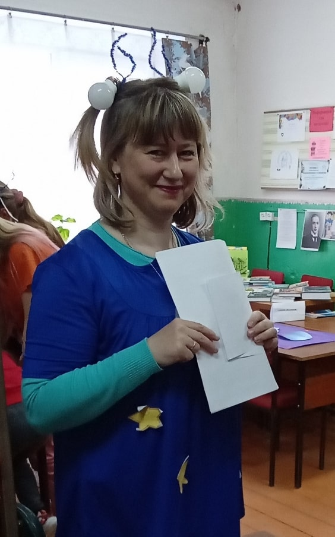среда, 21 апреля 2021 год
Сегодня в Краснопольской библиотеке прошёл экологический час «Берегите эту землю».
Накануне Дня Земли Суходоева Татьяна посмотрела два мультфильма о раздельном сборе мусора: «Просто разделяй!» и «Правильная утилизация отходов пластика, бумаги, батареек».
А дети из кружка «Библионик» узнали о предстоящем Дне Земли и главной экологической проблеме нашей планеты — мусоре. Ребята посмотрели видео «Земля. Один потрясающий день» о красоте нашей планеты.

Девочка из мультфильма «Давайте вместе Землю украшать» вышла из дома и увидела мусор на траве, дым из труб завода, выхлопные газы из проезжающего автомобиля, яд из сливных труб завода. Она сходила за лейкой и полила погибающее растение, из которого выросло красивое дерево.

Из электронной презентации «Вторая жизнь мусора» мы узнали, что можно сделать из бумаги и пластика.
Электронная презентация «Эмили Граветт «Полный порядок» была сделана по книге о барсуке Бобби, лесном чистюле, который сделал ошибку, но исправил её с помощью всех зверей.

Презентация «Правила поведения в лесу» ещё раз напомнила детям, что нельзя делать в лесу.
А потом была игра «Карусель отходов». Дети раскладывали по очереди мусор в три коробки: синюю (для чистого мусора), серую (для грязных отходов) и оранжевую (для опасных отходов).
И перед уходом ребята участвовали в игре «Это мой дом». Если жильё животных было названо правильно, надо было поднять руки «домиком» над головой, если нет — топать.

среда, 21 апреля 2021 год
Сегодня Кондакова Надежда Ивановна сделала очень хорошие подарки в Коробку добра Краснопольской библиотеки.

вторник, 20 апреля 2021 год
Сегодня прошёл экологический час «Живи, Земля!» для детей от 2 до 4 лет и воспитательницы Новицкой Любови Викторовны.

Дети посмотрели мультфильм «Окружающая среда и наша планета» к Дню Земли, затем электронную презентацию «Берегите планету от мусора». Детсадовцы увидели горы мусора и свалки, опасные для жизни людей, животных, растений, для воздуха, воды и земли.
А потом все подошли к трём коробкам. Синяя коробка предназначена для чистых отходов (стеклянных и пластиковых бутылок, банок, бумаги, вымытых консервных банок), серая — для грязных (кожура от мандаринок, картофеля, банана, средства личной гигиены), оранжевая — для опасных (батарейки, старый смартфон). Что из этого мусора можно класть в мусорный контейнер в нашей деревне?
Бумагу можно сжечь или сдать в макулатуру, отходы от еды можно девать в огород для удобрения, а остальное мы относим в контейнер. Кроме опасных вещей. Больше всего мусора оказалось в синей коробке. Ребятам очень хотелось найти и положить мусор самим.

Напоследок мы все приняли участие в физминутке «Капитан Краб. Делай так». До новой встречи!
понедельник, 19 апреля 2021 год
19 апреля проходит акция «Письмо Победы». Во время Великой Отечественной войны каждый месяц в действующую Красную Армию полевой почтой доставлялось 70 миллионов фронтовых писем.


В честь акции сегодня мы с Суходоевой Татьяной учились делать фронтовое письмо-треугольник. Библиотекарь рассказала, о чём писали солдаты в своих письмах. А потом Таня подписала сделанное ею письмо, как будто оно было написано Кондаковой Лидии Константиновне от мужа Кондакова Александра Яковлевича. Это прабабушка и прадедушка Тани по линии бабушки Суходоевой Татьяны Александровны.


Прадед ушёл на фронт, когда ему исполнилось 18 лет. Это было в 1943 году. Библиотекарь Елена Евгеньевна нашла на сайте «Память народа» информацию про подвиг Кондакова Александра Яковлевича, за который он 20 апреля 1945 года получил медаль «За отвагу». 2 апреля 1945 года в районе Кракау (сейчас Краков) во время уничтожения остатков окружённой группировки немцев Александр Яковлевич бесперебойно заряжал своё орудие, не допуская задержки. Было уничтожено около десяти немцев и подавлены две огневые точки. В конце войны Александр Яковлевич был рядовым в/ч 1585 зенитно-артиллерийского полка 47 зенитно-артиллерийской дивизии РГК 2 Белорусского фронта. Фотографий прадеда, к сожалению, не осталось. Осталась только память.
понедельник, 19 апреля 2021 год
Сегодня вручены сертификаты за участие в районном фестивале детского прикладного творчества «Живи! Твори! Мечтай!» Суходоевой Татьяне, Суходоевой Дарине и Черных Артёму.


пятница, 16 апреля 2021 год
Сегодня библиотекарь вручила грамоту Хлебниковой Юлии за 1 место в районном фестивале детского творчества «Живи! Твори! Мечтай!».

пятница, 16 апреля 2021 год
Сегодня в акции «Добрая книга» поучаствовала Фалалеева Юлия, которая подарила Краснопольской библиотеке три детских книги.

Также Юлия положила свой подарок в Коробку добра Краснопольской библиотеки. Большое спасибо!
четверг, 15 апреля 2021 год
Сегодня в Краснополье прошёл экологический урок для ветеранов «Раздельный сбор мусора: разделяй и здравствуй!» в рамках акции «Добрая Вятка».
Что относится к твёрдым коммунальным отходам? Почему такой острой стала проблема свалок?
Каждый житель России производит 400 кг мусора в год. Всего за год по всей стране производится больше 58 миллионов тонн мусора. В нашей деревне Краснополье получается примерно 100 тонн в год. А во всей Кировской области каждый год накапливается 316 тысяч тонн ТКО.
Свалки стали бедствием для окружающей среды. Полигоны занимают большие территории. Выход какой? Уменьшить потребление, а также разделять отходы и заниматься их переработкой.
Ещё мы узнали, что годится для макулатуры, а что нет. Одни виды пластика можно переработать, а пластик №3 и №7 нельзя складывать в контейнер для переработки — это опасные виды.
Также мы увидели, что производится из переработанной бумаги и пластика. Цель раздельного сбора мусора — ноль отходов, а пользы от него очень много.
Мы бы тоже хотели, чтобы в нашей деревне мусор разделялся. С мусором проблем много, ведь каждый хозяин должен следить за чистотой у своего дома, если он любит свою деревню.
Ещё мы посмотрели «Творческий отчёт Краснопольской библиотеки за 2020 год», где рассказывалось, как пришлось работать в условиях ограничений. А затем мы познакомились с электронной презентацией «Краснопольская искусница Людмила Ивановна Семиглазова», созданной библиотекарем для районного краеведческого конкурса «Земли родной талант и вдохновенье — 2021» к 85-летию Кировской области.
четверг, 15 апреля 2021 год


среда, 14 апреля 2021 год
Сегодня на занятии кружка «Библионик» для детей и воспитательницы Перескоковой Александры Николаевны прошёл экологический час «Живи, Земля», приуроченный к Дню экологических знаний.

У выставки-просмотра «Про зелёные леса и лесные чудеса» дети посмотрели мультфильм «Мальчик и Земля» о том, как люди извинились перед нашей планетой за то, что они мусорили и загрязняли всё вокруг себя. Дети из детского сада рассказали, что они не мусорят.
В мультфильме «Не сори. Приключения Нефтяши и её друзей» появившийся мусорный монстр был уничтожен благодаря Скорой помощи. Мультик заканчивается песенкой со словами: «Сохраним мы чистоту с белочкой Нефтяшей».
В электронной викторине «Загадки про животных» победителем стал Андраник Маргарян. В другой электронной викторине «Загадки про цветы» лучшей стала Злата Толмачёва.

Победители и участники викторин получили небольшие подарки от библиотекаря. И на память прошла небольшая фотосессия.
среда, 14 апреля 2021 год
Сегодня в Краснополье прошёл урок мужества, посвящённый Маршалу Леониду Говорову, уроженцу Кировской области.
Участники урока узнали о родителях Леонида Говорова, его учёбе в училище города Елабуги, его военной карьере и военных наградах. Будем помнить.
вторник, 13 апреля 2021 год
Сегодня для малышей и воспитательницы Новицкой Любови Викторовны в Краснопольской библиотеке прошла Весёлая минутка «В гостях у Бурёнки».
Мы посмотрели все сказки и стихи с выставки-просмотра «Символ 2021 года — мудрая и добрая корова», а затем библиотекарь прочитала книжку Сачковой и Исаковой «Телёнок ищет маму».

После мультфильма «Про корову» мы с ребятами поиграли в пальчиковую игру «Коровушка» и подвижную игру «Корова и телёнок»: бегали и мычали.

В конце нашей встречи все танцевали под мультпесенку «Мы умеем танцевать».

вторник, 13 апреля 2021 год
Сегодня в Коробку добра Краснопольской библиотеки положила свой подарок Жигалова Генриетта Анатольевна. Большое спасибо!

понедельник, 12 апреля 2021 год
Сегодня Коробка добра в Краснопольской библиотеке пополнилась подарком от Бобылевой Валентины Ивановны. Большое спасибо!

«Коробка добра» — это то место, куда можно положить вещи, необходимые нуждающимся детям: канцелярские принадлежности, игрушки, книги, настольные игры.

понедельник, 12 апреля 2021 год
Сегодня библиотекарь Краснопольской библиотеки провела Гагаринский урок для Суходоевой Татьяны.
После чтения слов на космическую тему на английском языке и просмотра мультика «Планеты Солнечной системы» Таня познакомилась с книгой Светланы Шешиной «Родом из Березичей» о 100-м космонавте Земли из Оричевского района Кировской области Викторе Савиных. Полистали книгу вместе, библиотекарь рассказала Тане немного о его первом полёте.
Затем Таня посмотрела слайд-шоу «Картины космонавта Алексея Леонова», а после ответила на вопросы электронной викторины «В космических далях».
пятница, 9 апреля 2021 год
Сегодня в Краснопольской библиотеке для трёх девочек от 13 до 14 лет была проведена электронная викторина «В космических далях». Затем мы посмотрели клип «Красивая музыка и космос», а девочки ответили на викторину «Просто Фиксики» по мультсериалу.

пятница, 9 апреля 2021 год
После обеда в Краснопольскую библиотеку приехал Николай Владимирович Шабалин. От агропромышленного холдинга «Дороничи» он подарил более 20 новых книг для детей и взрослых. Это самый замечательный подарок в этом году.

пятница, 9 апреля 2021 год
Также в пятницу с 16 часов на семейном клубе «От всей души» прошла Весёлая Олимпиада, которую посетил 21 человек.
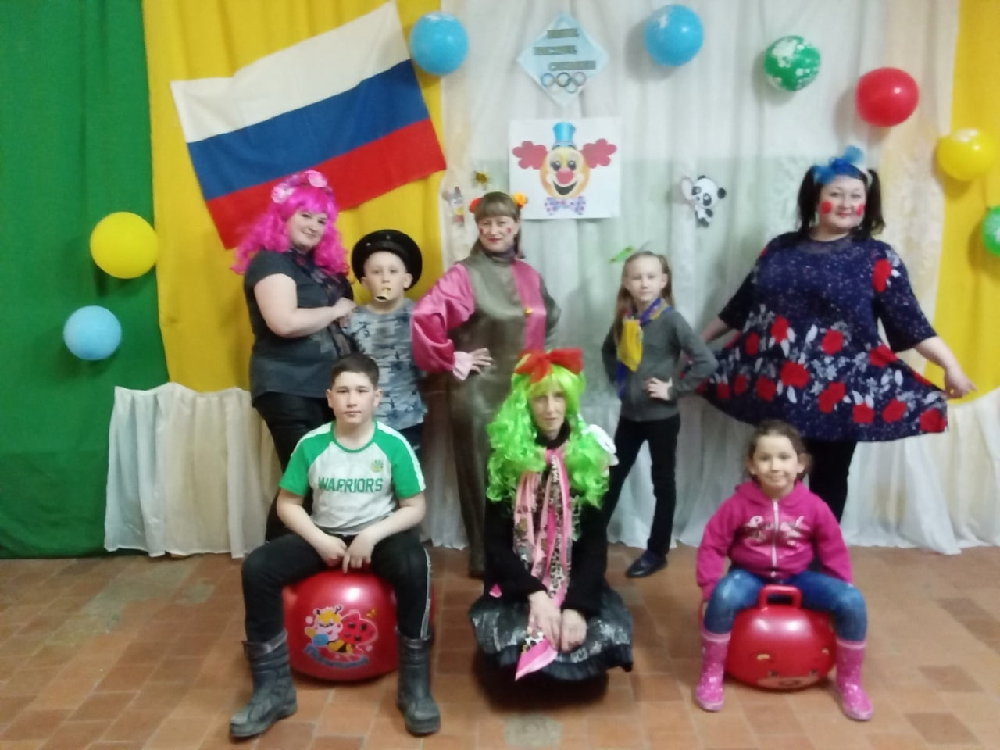Вели программу два «клоуна» и какая-то девчонка в веснушках с зелёными волосами. Это были Хлебникова Оксана Витальевна, Суходоева Анастасия Николаевна и Фалалеева Елена Евгеньевна.
Были весёлые конкурсы, где использовались шарики, мячики маленькие и большие, обручи, мука со спрятанными конфетками, изображения разных животных и весёлая шляпа.

Время провели очень весело!
четверг, 8 апреля 2021 год
Сегодня в Краснопольской библиотеке девочки посмотрели мультфильмы «Профессор Почемушкин. День космонавтики. От Земли до Луны» и трейлер мультфильма «Незнайка на Луне».
Затем они приняли участие в игре-викторине «Звёздочки и ракеты» по сказке Николая Носова «Незнайка на Луне». Победила Виолетта Вотинова.

А в викторине «Изобретения и изобретатели» лучше всех отвечала Анна Кондакова.
среда, 7 апреля 2021 год
Сегодня на занятии кружка «Библионик» было пятеро детей и воспитательница Перескокова Александра Николаевна.
Час космонавтики начался со знакомства с выставкой-просмотром «Путь к звёздам» и просмотром мультфильма «Белка и Стрелка».
Из мультфильма «Юрий Гагарин. Биография детей» ребята узнали о детстве и школьных годах первого космонавта Земли: что было во время Великой Отечественной войны, почему Юрию захотелось летать, как он стал космонавтом и как погиб.
А из видео «Космический транспорт для детей» ребята узнали про разные виды космической техники.

Затем мы все участвовали в творческой мастерской «Космические корабли», где делали разноцветные летательные аппараты из цветной бумаги.

вторник, 6 апреля 2021 год
Сегодня в Краснопольской библиотеке продолжается Неделя космонавтики. Для детей от 2 до 3 лет из детского сада «Родничок» с воспитательницей Новицкой Любовью Викторовной в 11 часов утра прошёл познавательный час «Удивительный космос».
Малыши познакомились с выставкой-просмотром «Путь к звёздам», посмотрели познавательный мультфильм «Профессор Почемушкин. День космонавтики. Белка и Стрелка» про двух собачек, побывавших в космосе 19 августа 1960 года. Мультик «Незнайка на Луне» рассказал им про приключения коротышки, героя сказки Николая Носова.
Затем была «Песенка юных космонавтов» из любимого ребятами мультфильма «Маша и медведь». А игры «Космос» и «Невесомость» повеселили ребят.
вторник, 6 апреля 2021 год
С 13 часов четверо детей от 7 до 12 лет посмотрели видео «Белка и Стрелка» и ответили на викторину про звёздных собак реальных и мультяшных. Победила Настя Вылегжанина.
Также для ребят был проведён квиз «Начинай с зарядки день».

вторник, 6 апреля 2021 год
В 14:30 на вопросы электронной викторины «В космических далях» ответили Лебедев Данила и Игнатушенко Радомир (15 и 14 лет). Данила выиграл с небольшим перевесом в баллах.

Также для ребят был проведён квиз «Начинай с зарядки день».

понедельник, 5 апреля 2021 год
Сегодня в библиотеке была проведена «Космическая викторина» для четырёх детей от 7 до 12 лет. С большим преимуществом выиграла Виолетта Вотинова.
понедельник, 5 апреля 2021 год
Второго апреля в библиотеке была оформлена выставка-просмотр для детей «Путь к звёздам».

пятница, 2 апреля 2021 год

пятница, 2 апреля 2021 год


четверг, 1 апреля 2021 год


среда, 31 марта 2021 год
Сегодня шесть детей и воспитательница Толмачёва Татьяна Александровна пришли на занятие кружка «Библионик».
Экологический час «Пернатые обитатели Земли» начался со знакомства с выставкой-просмотром книг и рисунков детей «Птичьи секреты». На выставке были представлены рисунки самых разных птиц: филина, щурки, зимородка, щегла, сороки, аиста и других.
На видео «Певчие птицы России» мы не только увидели многих поющих птиц, но и послушали, чем отличается их окраска, размеры и пение.
В электронной викторине «Загадки для детей о птицах», ответив на дополнительный вопрос, выиграла Злата Толмачёва.
Из электронной презентации «Кобчик — птица 2021 года» дети узнали про эту небольшую хищную птицу: как она выглядит, чем питается, где обитает и почему кобчик оказался в Красной Книге.
Завершилось занятие электронной презентацией «Открытия, который потрясли мир. Путешествие во времени», преуроченной к Году науки и технологий.
До новых встреч!
среда, 31 марта 2021 год
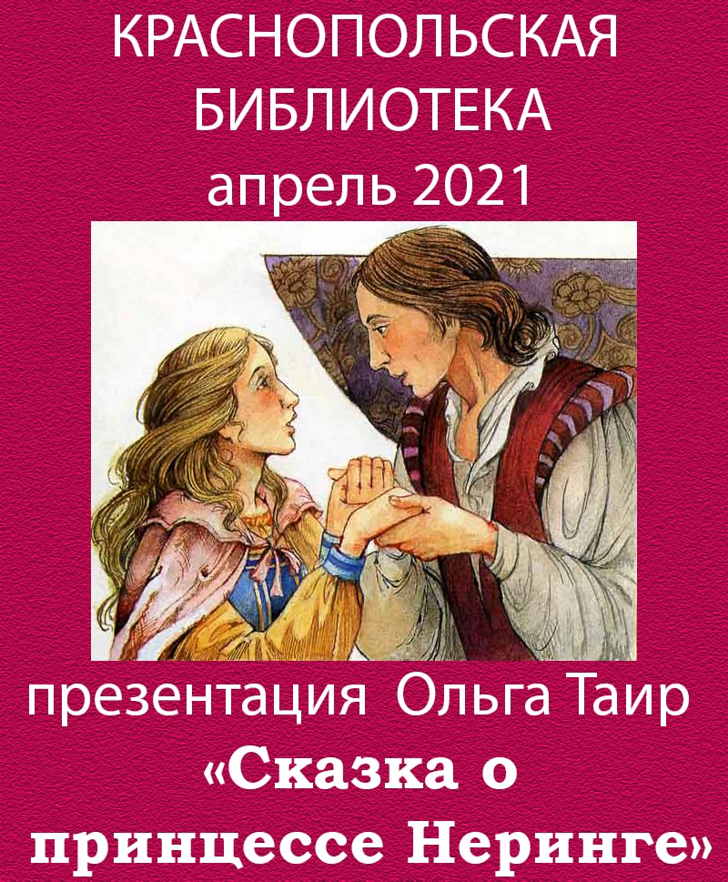суббота, 27 марта 2021 год
Во время Недели детской книги в Краснопольской библиотеке была оформлена выставка детского творчества «Живи! Твори! Мечтай!». Всего было представлено десять поделок. Их авторы — Чёрных Артём, Суходоева Дарина, Суходоева Татьяна и Хлебникова Юлия.
По условиям фестиваля детского творчества каждому участнику надо было предоставить не более трёх работ. Но Суходоева Татьяна отдала на выставку целых шесть поделок.
Оценили эти работы 11 человек. Детям из детского сада особенно понравились лошадка, танк, цветы в вазе и аппликация «Подснежники». Воспитателю детского сада также понравился танк. В работах участников выставки нужно было учитывать качество, оригинальность, количество и самостоятельность.
четверг, 25 марта 2021 год
Сегодня Суходоева Татьяна отвечала на вопросы электронной викторины «Тайны вкусных книжек» и шанс-викторины «Мои любимые книги». На вопрос о любимых книгах Таня ответила, что ей нравятся детективы Кати Матюшкиной.
среда, 24 марта 2021 год
Сегодня на занятии кружка «Библионик» в Краснопольской библиотеке отметили День вкусных книг.
На выставке-просмотре «Вкусная книжка и ещё десяток интересных книг про еду» дети узнали о сказках и стихах народов мира и России. А электронные викторины «Загадки о фруктах» и «Тайны вкусных книжек» заставили ребят подумать. Лучше всех фрукты знает Света Суходоева. «Тайны вкусных книг» быстрее разгадали Андраник Маргарян со Светой Суходоевой.
Затем дети познакомились с новыми детскими книгами, подаренными Варлыгиной Людмилой Георгиевной, посмотрев презентацию и сами книжки.
После этого ребята посмотрели два буктрейлера: по книге Кати Матюшкиной «Веники еловые» и книге Антона Сои «Звёздочка на Евровидении».
Что такое театр? Ребята решили, что он похож на библиотеку. Но из мультфильма «Фиксики. История театра» они узнали, что в театрах выступают артисты.
Также ребята ознакомились с выставкой детского творчества «Живи! Твори! Мечтай!». Большинству очень понравились две поделки: танк и лошадка.
Наше занятие завершилось фотосессией. До новых встреч!
вторник, 23 марта 2021 год
Сегодня на экскурсию «В гости к книжкам» в Краснопольскую библиотеку приходили малыши из детского сада «Родничок» с воспитательницей Любовью Викторовной Новицкой.
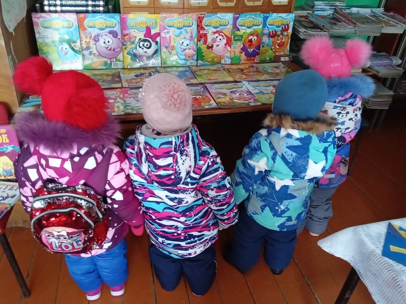 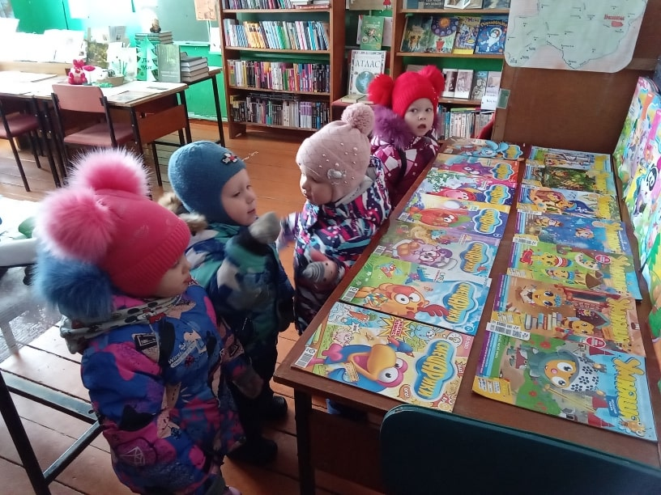Ребята увидели, как много здесь книг и журналов, — не только для взрослых, но и для детей. Также они посмотрели на поделки, которые находятся на выставке детского творчества «Живи! Твори! Мечтай!». И не только посмотрели, но и пытались угнать танк — экспонат выставки.

Много интересных книг было на выставке-просмотре «Лес чудес». Среди книг стоял бумажный ёжик, вязаный мухомор, игрушечные бурундучок и зайка.
Все вместе мы поиграли в «Паровозик чух-чух», а затем фотографировалась с бумажной ракетой.
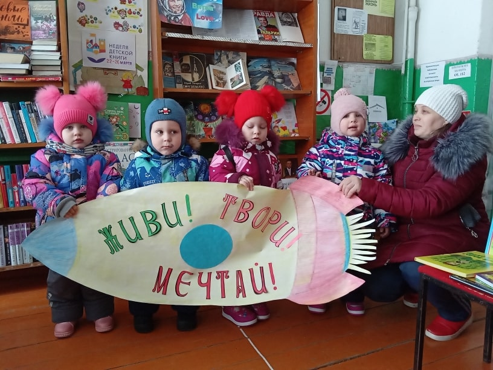Так прошло первое знакомство этих ребят с библиотекой. Очень жду новых встреч с малышами!
понедельник, 22 марта 2021 год
Сегодня в Краснопольской библиотеке началась Неделя детской книги.
Суходоева Таня познакомилась с лучшими книгами Юлии Кузнецовой, посмотрев электронную презентацию. Больше всех Тане понравились книги «Фонарик Лилька» и «Дом П». Затем она отвечала на вопросы электронной викторины «Путешествие по сказкам Гримм» к 235-летию со дня рождения Вильгельма Гримм.
А ещё Таня передала несколько поделок для выставки детского творчества «Живи! Твори! Мечтай!», с которой можно познакомиться в Краснопольской библиотеке.
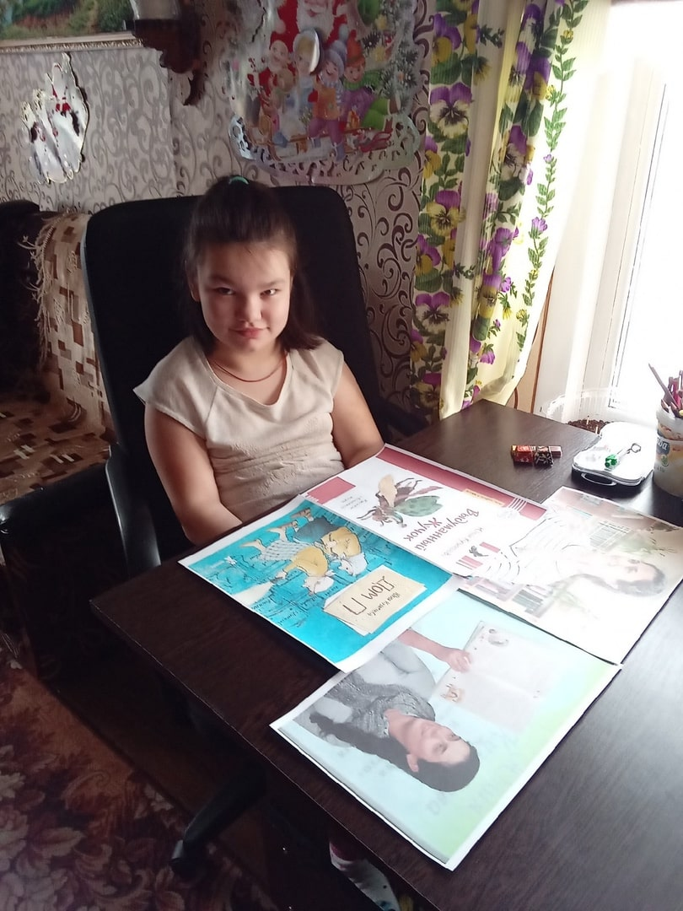четверг, 18 марта 2021 год
17 марта четверо детей с воспитательницей Толмачёвой Татьяной Александровной были в Краснопольской библиотеке на занятии кружка «Библионик».
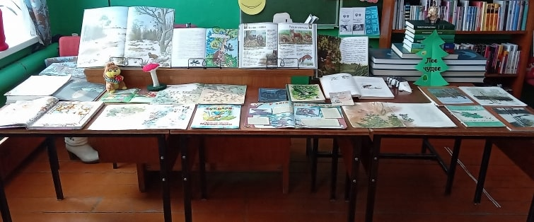Час весёлых затей посвящался Международному дню леса, который будет отмечаться 21 марта. Дети познакомились с книгами и журналами выставки «Лес чудес», а после посмотрели три видео про этот праздник и про то, что лес надо беречь, ведь лес — это лёгкие Земли и настоящее чудо.
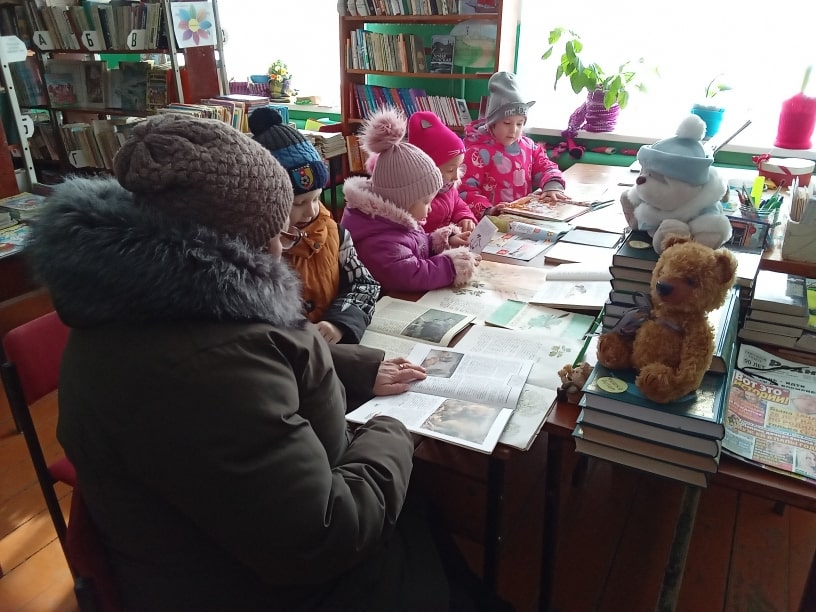
Также ребята повторили за библиотекарем три важных правила пребывания в лесу: «Не сори! Не губи! Не шуми!», а затем ответили на электронную викторину «Загадки про жителей леса».
Далее начались выборы Президента леса. Кандидатов было трое: заяц Алёша, мишка Стёпа и мишка Потап. Председателем избирательной комиссии была Татьяна Александровна.
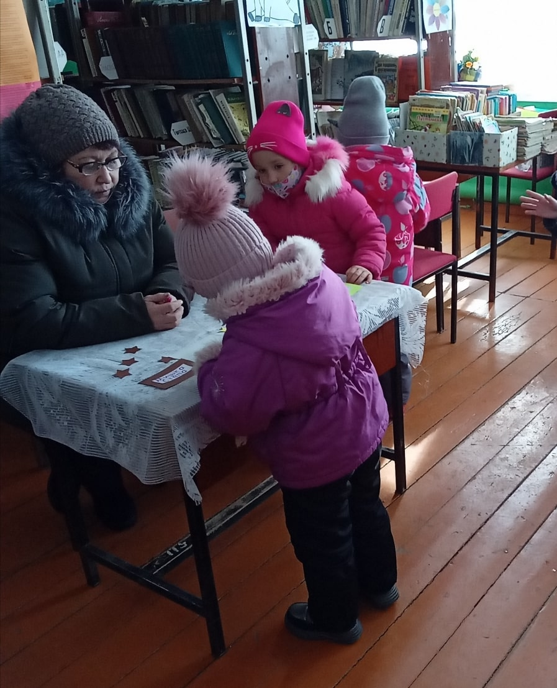В конце занятия дети поучаствовали в фотосессии с игрушками и получили небольшие призы.
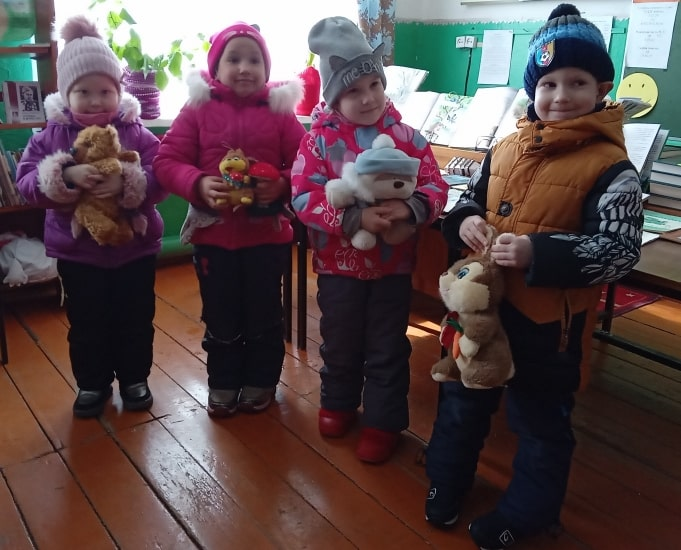воскресенье, 14 марта 2021 год
12 марта в Краснополье прошло занятие семейного клуба «От всей души». Как же весело мы провели время!

Оксана Витальевна Хлебникова провела игры. Мы водили хоровод, «пекли» блины и поедали их на скорость.


Дети надували шарики и лопали их, бегали наперегонки верхом на венике. Девчонки пели частушки.
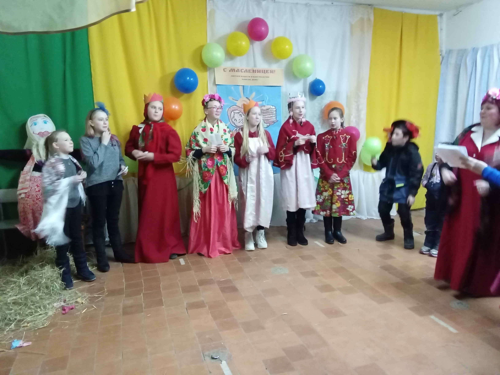
Мастер-класс по изготовлению Масленицы привлёк всех к участию.
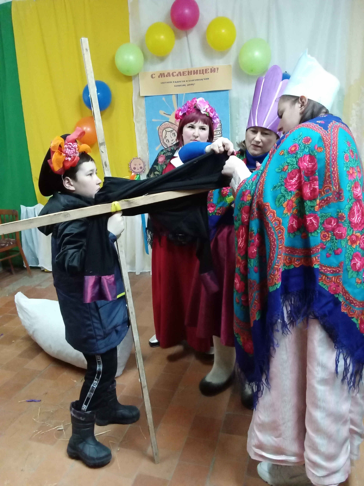 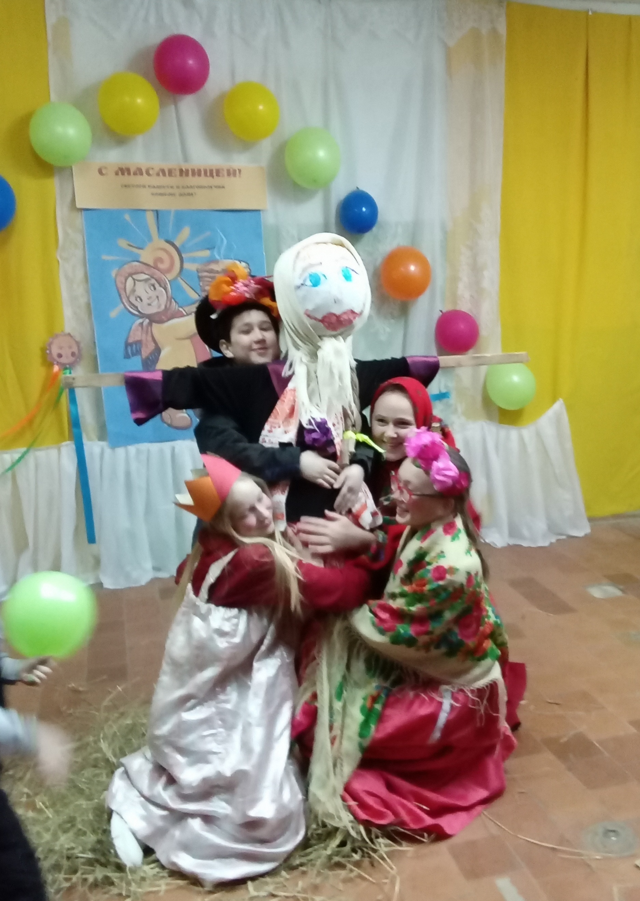Все желающие могли сфотографироваться у фотозоны.


А угощение блинами пшеничными, шоколадными, с вареньем, сгущёнкой и рыжиками завершили вечер.

Большое спасибо Хлебниковой Оксане Витальевне, Суходоевой Анастасии Николаевне, Толмачёвой Екатерине Анатольевне, Марамзиной Регине Алексеевне и всем девчонкам, поющим и задорным! Всех с Масленицей! Пусть масленица дарит вам добро, весеннее чудесное тепло. Пускай на сердце расцветут цветы, и сбудутся заветные мечты!
среда, 10 марта 2021 год
Десятого марта в Краснопольской библиотеке прошло занятие кружка «Библионик» для детей.
После весёлой игры «Блины-лепёшки» пятеро детей отвечали на вопросы электронной викторины «Широкая Масленица». Затем ребята водили хоровод и смотрели видео «Весну зазывали».

Во время игры «Птичий двор» надо было хлопать в ладоши, если библиотекарь называла не птицу.
Также дети пробовали повторять за библиотекарем скороговорки — это оказалось трудным занятием. Но не беда!
Актуальной была электронная викторина «Полезные загадки про здоровье». Ребята отвечали на вопросы про градусник, температуру, лекарства, Скорую помощь и другие.
Вроде бы в календаре началась весна, но у нас в деревне наступили сильные холода. Поэтому мы посмотрели видео «7 видов зимнего спорта». Незнакомым для ребят был только кёрлинг.
Занятие подошло к завершению. В бумажных масках тигра, волка, лисички, зайчика и козы-дерезы дети фотографировались вместе с воспитательницей Толмачёвой Татьяной Александровной.

четверг, 4 марта 2021 год
Третьего марта в Краснопольской библиотеке прошло занятие кружка «Библионик».
Для четырёх детей с воспитателем Толмачёвой Татьяной Александровной библиотекарь Фалалеева Елена Евгеньевна провела час весёлых затей «В гостях у домовёнка».
Хотелось, чтобы у детей появился интерес к домовёнкy — персонажу русских сказок. Они приняли участие в играх на развитие внимания, памяти, познавательных интересов.
Сначала надо было заселить домового. На листе нарисован дом, а ребята с завязанными глазами должны были прикрепить к крыше трубу, внутри домика поставить печку и разместить домовёнка с его волшебным сундучком.
 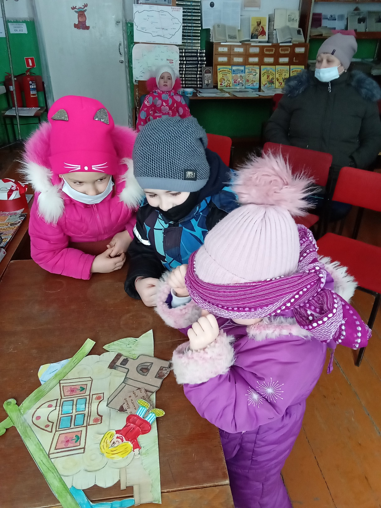
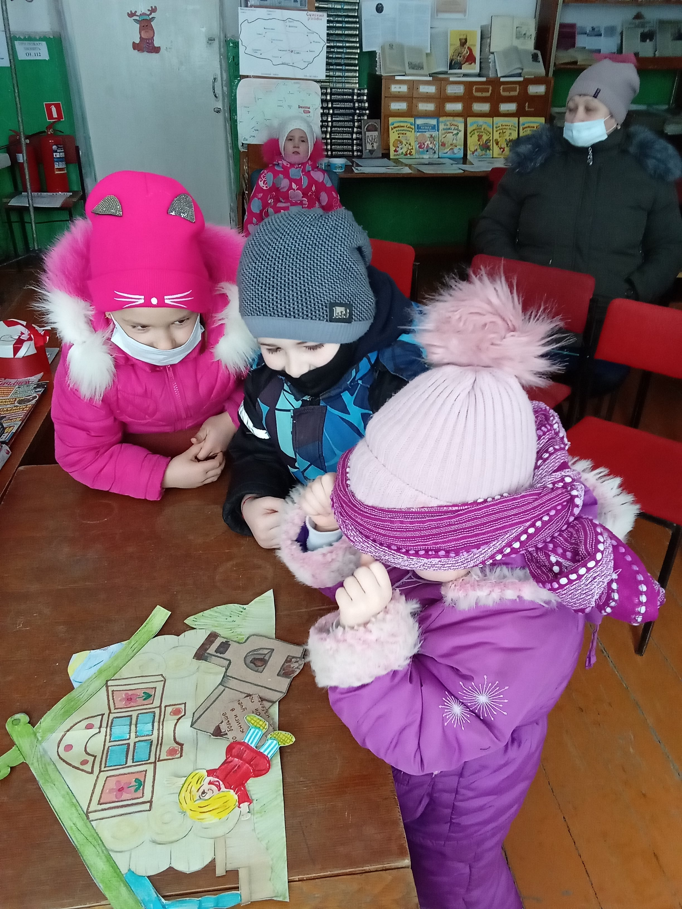
Любимая игра домового — похулиганить, вещи с места на место переставить, дверьми и окнами постучать. Перед ребятами были разложены плюшевый зайка, баночка для скрепок, туалетная вода, крем для рук, бумажный журавлик, розовая свинка Пеппа, девочка с книгой из керамики. Надо было запомнить, где лежат эти предметы. Потом дети закрывали глаза, а вещи менялись местами. И нужно было расположить вещи так, как они находились раньше. Все справились хорошо. Память у детей отличная.
Представьте, что домового наругала его жена Кикимора, и вот сейчас он разозлился и специально перепутал все вещи, а вернее все пуговицы в шкатулке. Задача участников — как можно быстрее разложить пуговицы по кучкам: в первую кучку положить пуговицы с двумя дырочками, во вторую кучку положить пуговицы, у которых четыре дырочки, а в третью кучку положить пуговицы на ножках.

Затем готовили кашу для домовёнка, но не настоящую, а понарошковую. Если из названного предмета готовится каша, то надо было хлопнуть в ладоши и крикнуть: «ДА!». Но если названные продукты для каши не нужны, то надо было топнуть ногами и сказать: «НЕТ!»
В электронной викторине «С днём домового!» больше всех правильных ответов дала Злата Толмачёва. Вопросы были про домовёнка Кузьку из сказки Татьяны Александровой с 3 вариантами ответов.
Также ребята посмотрели рисунки к книгам про Кузьку. Этим рисункам уже больше 10 лет. Их авторы Ульяна Новицкая, Ангелина Лянгузова, Фалалеев Миша, Алёша Криса учились тогда в школе и участвовали в выставке рисунков. Рядом с рисунками стояли книги Галины Александровой про Кузьку, которые раньше любили читать школьники.

Познакомились дети и с электронной викториной к Дню белого медведя. Они узнали много интересного про этого жителя Арктики, который, к сожалению, находится в Красной Книге России.
Весёлый клип «Кошачья планета» напомнил о прошедшем в понедельник Дне кошек.
И, конечно, мы согрелись, выполняя «Весёлую зарядку» Бусыгина.

Вот такой весёлый был в библиотеке час!
понедельник, 1 марта 2021 год
Первого марта библиотекарь Фалалеева Елена Евгеньевна провела для Суходоевой Тани шанс-викторину на дому «В приветливом роду кошачьем» к Всемирному дню кошек. Таня находится на домашнем обучении, а дома у неё есть кошка и два кота.
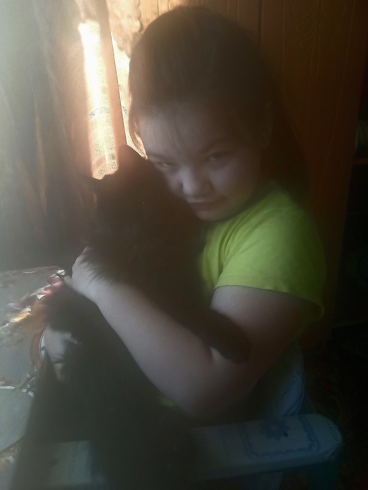 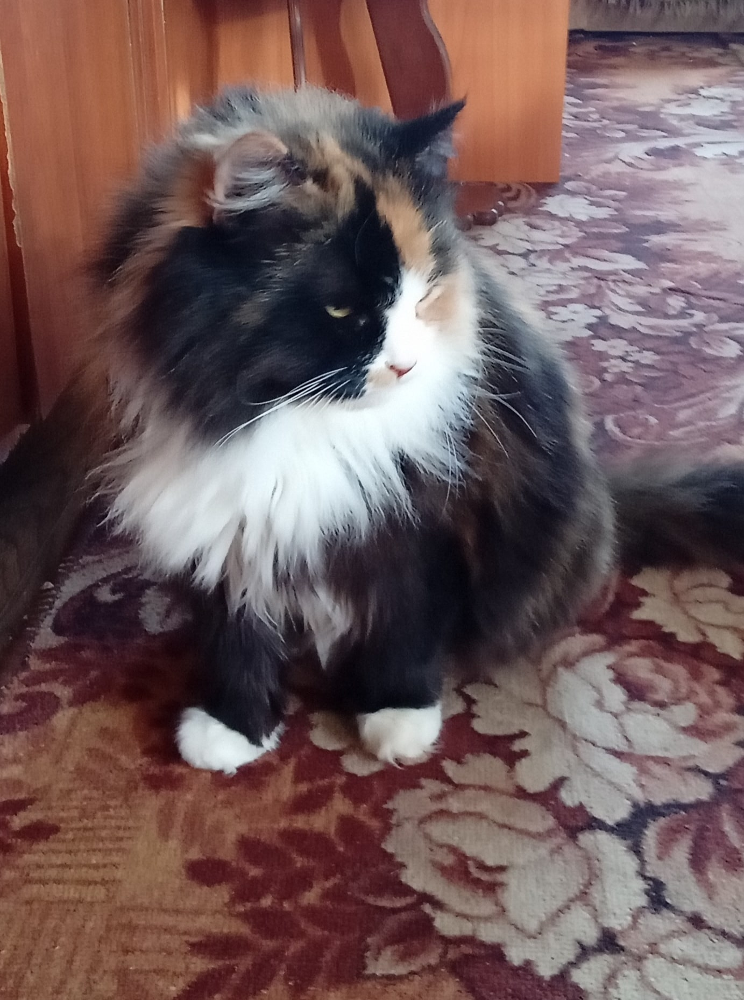воскресенье, 21 февраля 2021 год
понедельник, 15 февраля 2021 год
С 5 по 15 февраля в библиотеках Сунского района прошла акция «С любовью в дар» к Международному дню книгодарения.
Замечательный подарок Краснопольской библиотеке сделала Варлыгина Людмила Георгиевна: подарила десять книг российской и зарубежной классики для детей, русские народные сказки.
пятница, 12 февраля 2021 год
четверг, 11 февраля 2021 год
среда, 10 февраля 2021 год

понедельник, 8 февраля 2021 год
вторник, 12 января 2021 год
 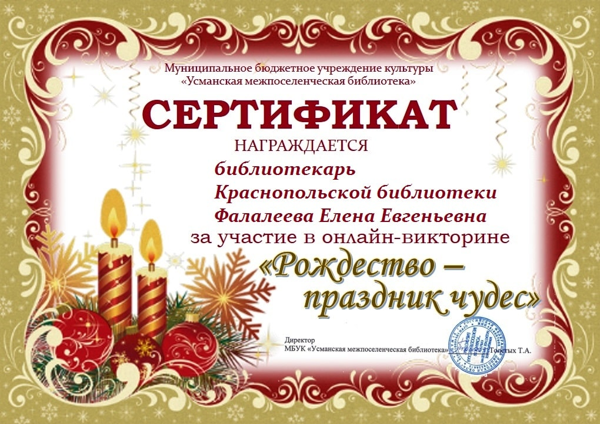
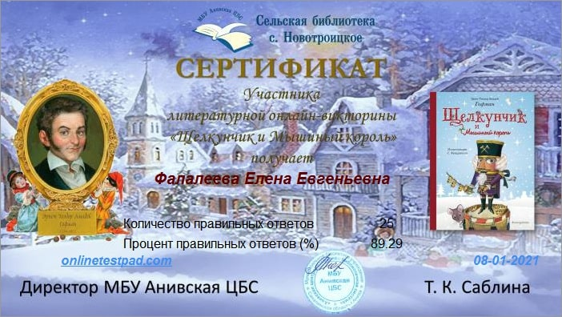
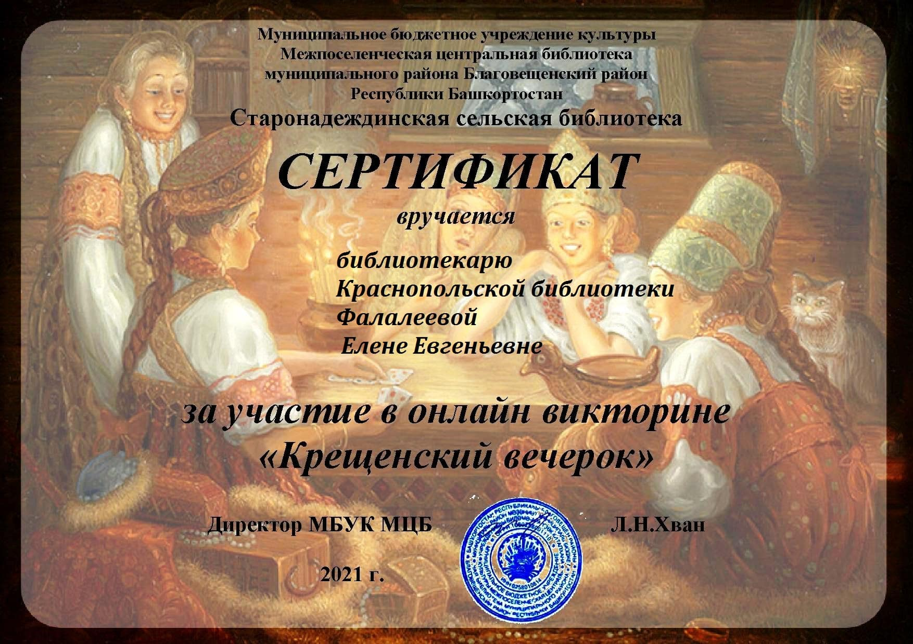
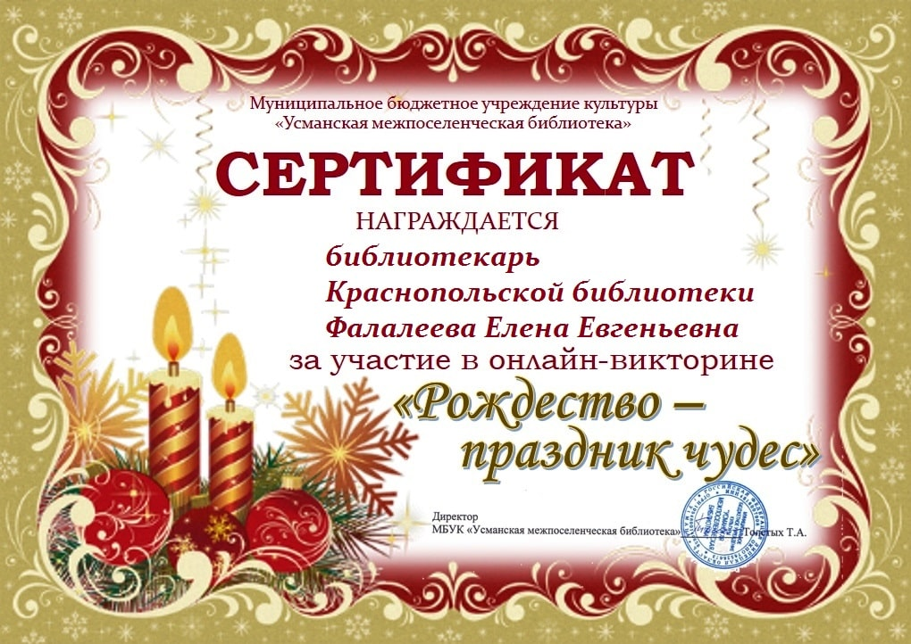
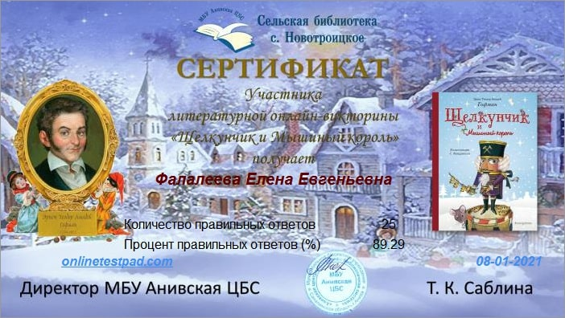
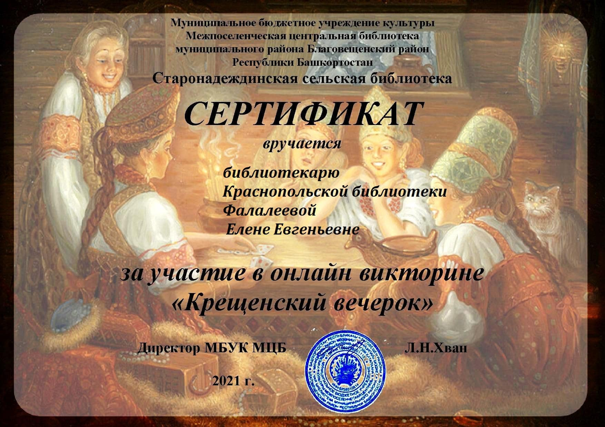

 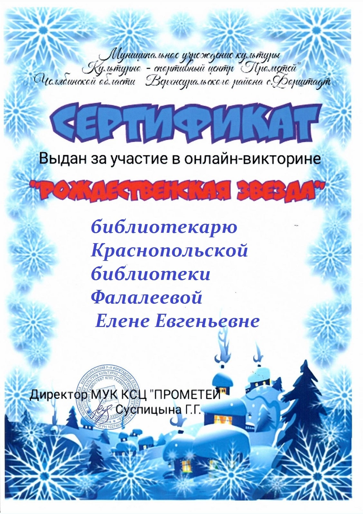
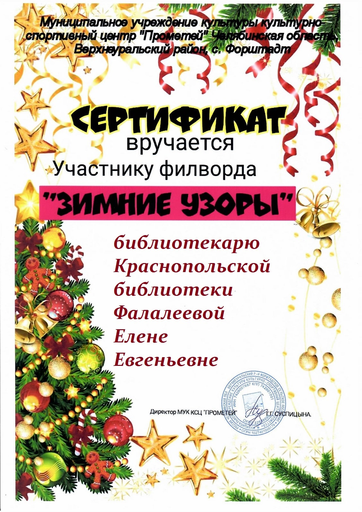
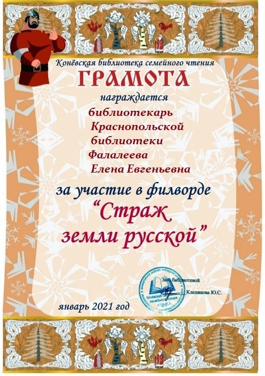
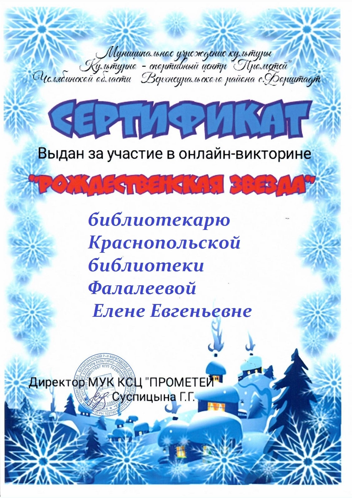
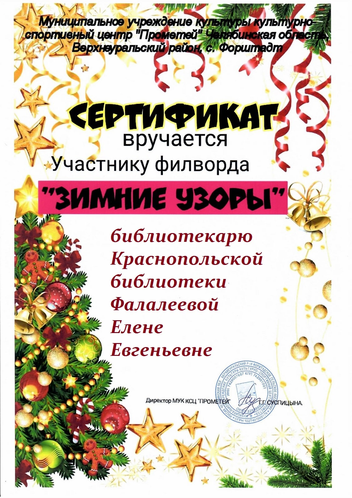
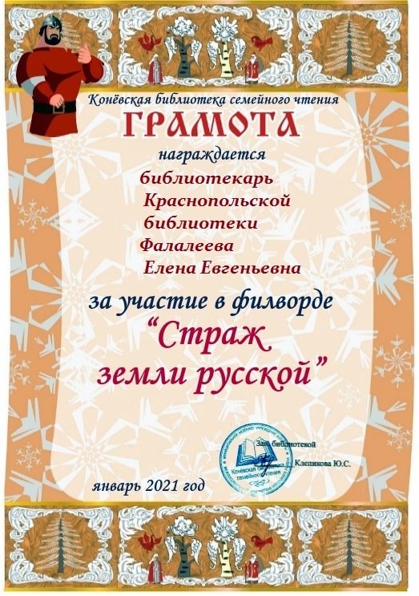